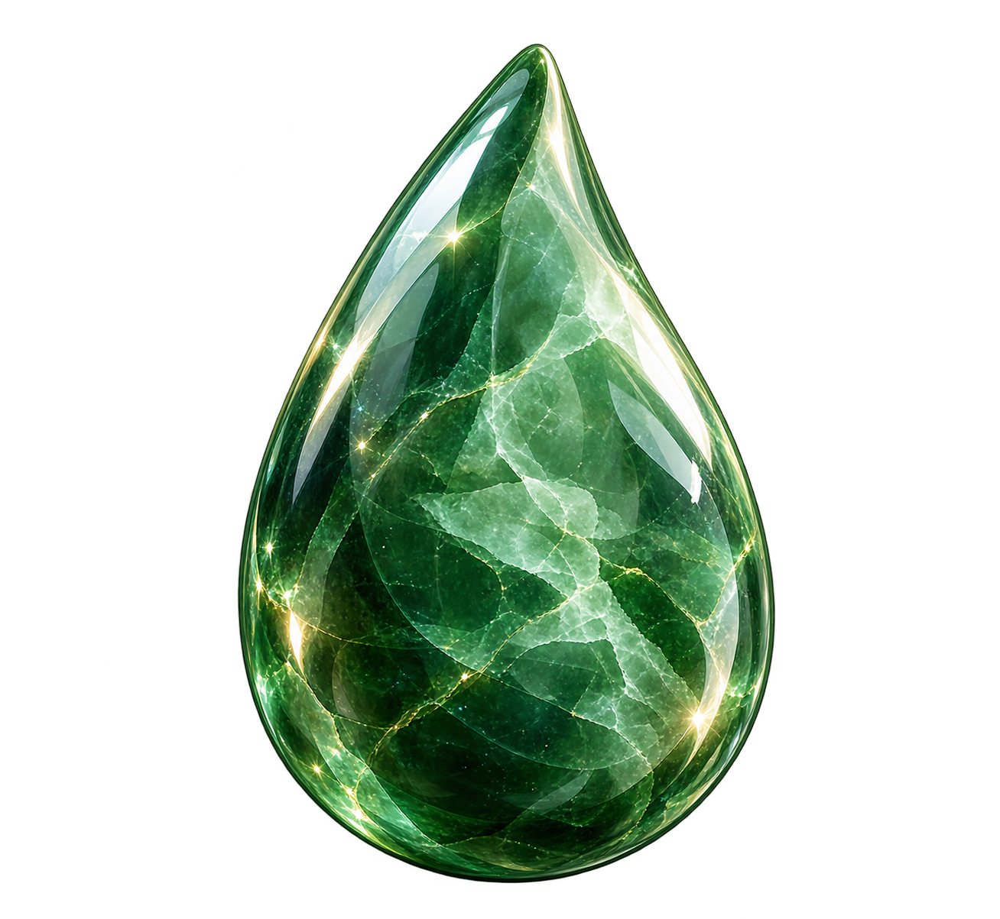
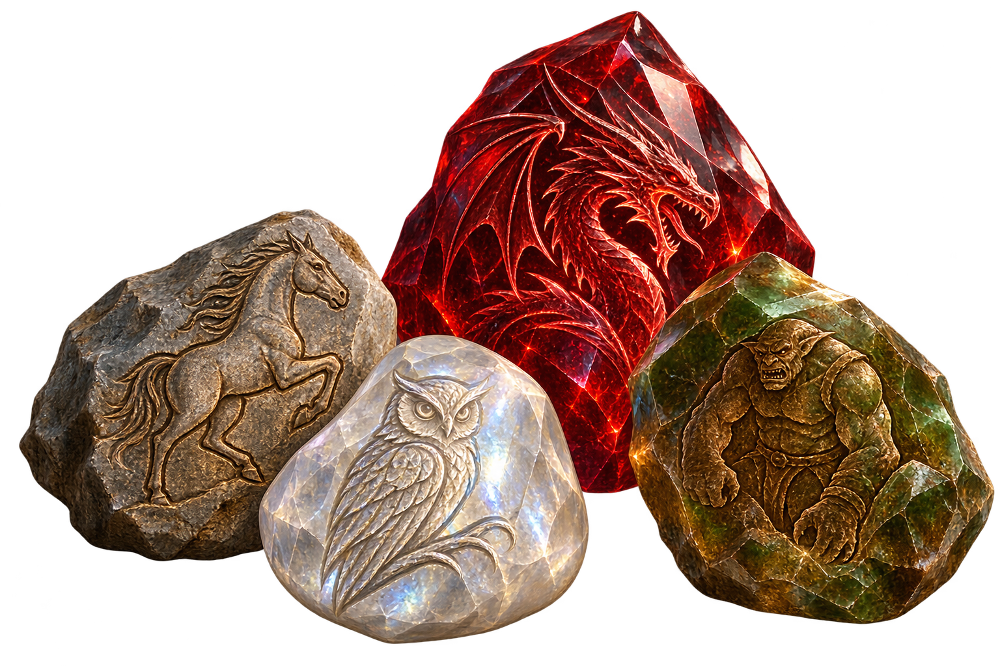
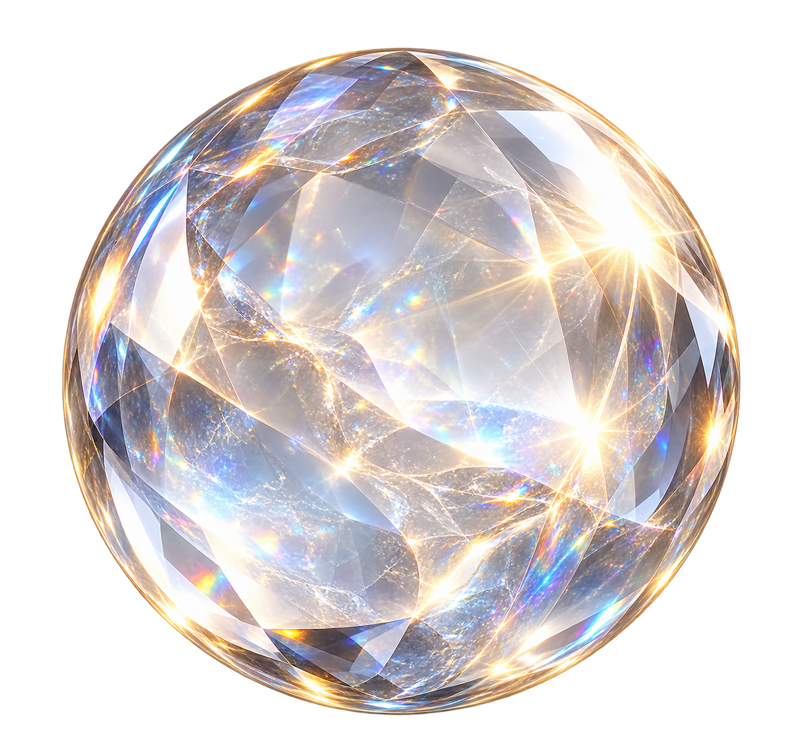
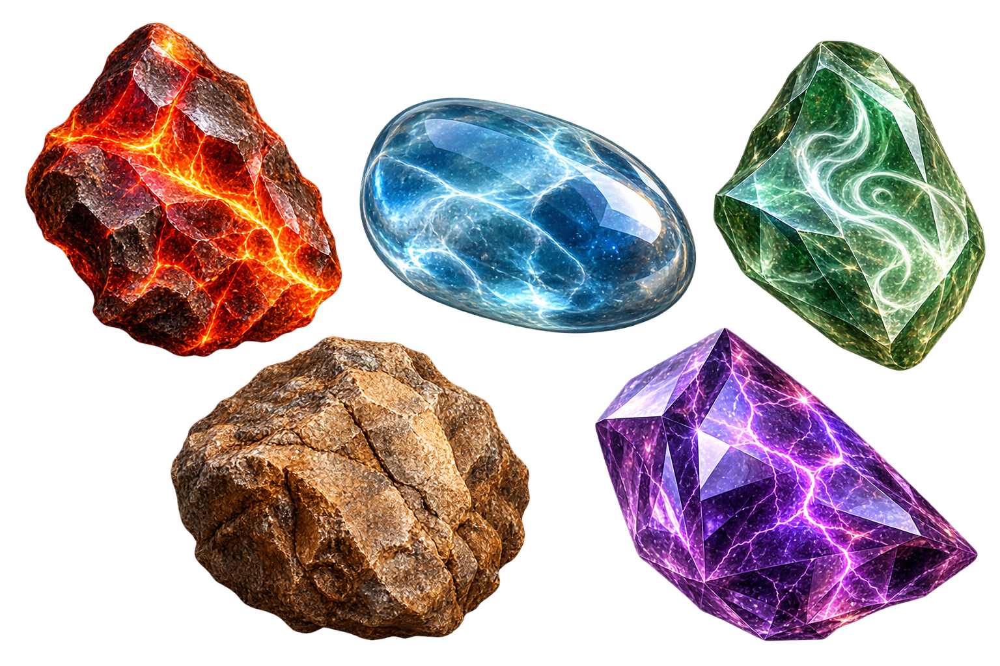
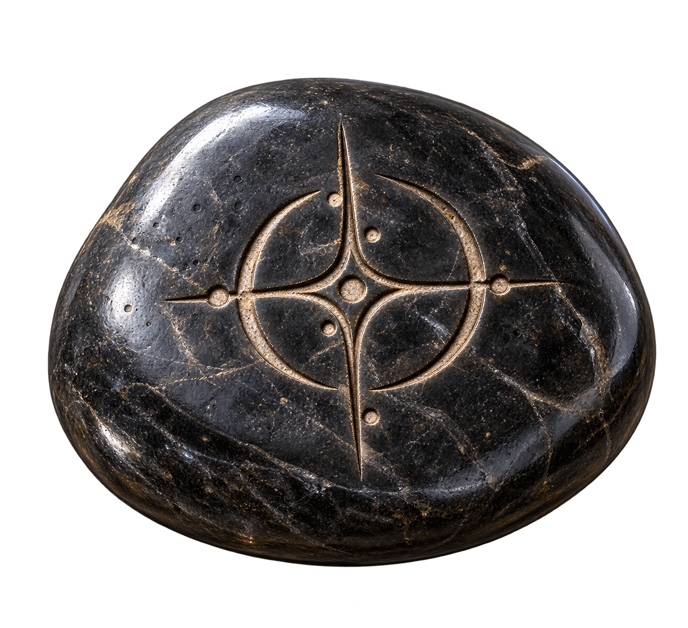

Supports durables
Conserver une empreinte
Les Holopierres et les Mélopierres conservent une information magique : image, voix ou musique. Elles ne disparaissent pas à la lecture, même si l'énergie qu'elles renferment peut évoluer avec le temps.
À Hignar, une pierre peut devenir bien davantage qu'un simple minéral. Selon sa nature, sa qualité et la magie qu'on y imprègne, elle peut conserver un message, enfermer une transformation, libérer un sort ou ouvrir un passage vers une destination précise.
Certaines pierres sont des supports que l'on peut consulter encore et encore. D'autres concentrent toute leur magie dans une seule utilisation et sont détruites lorsqu'elles libèrent leur pouvoir.
Les Holopierres et les Mélopierres conservent une information magique : image, voix ou musique. Elles ne disparaissent pas à la lecture, même si l'énergie qu'elles renferment peut évoluer avec le temps.
Les Métapierres, Vitapierres, pierres d'incantation et pierres de téléportation sont à usage unique. Leur pouvoir est libéré lors de l'activation et la pierre est alors détruite.

Une Holopierre permet d'enregistrer puis de projeter un message holographique. L'enregistrement reste gravé dans la pierre tel un souvenir fixé dans la matière.
La pierre peut être relue à volonté, mais l'énergie qui permet la projection s'estompe lentement au fil du temps. De légers artefacts apparaissent alors dans l'image, puis deviennent de plus en plus importants jusqu'à rendre l'enregistrement inutilisable.

Chaque Métapierre renferme une transformation précise. Une fois activée, elle permet à son utilisateur de prendre temporairement la forme de la créature qui y a été inscrite et, selon la transformation, d'accéder à une partie de ses capacités.
La durée ne dépend pas d'un temps fixe : elle est liée à la quantité de magie imprégnée dans la pierre et à la puissance consommée pendant la transformation. Plus l'utilisateur exploite les capacités de la forme invoquée, plus l'énergie s'épuise rapidement.

La Vitapierre est l'une des pierres les plus rares et les plus précieuses d'Hignar. Son pouvoir ne soigne pas un corps : il permet de rappeler l'âme lorsque la situation le permet.
Dans le cas d'une mort naturelle ou physique, son utilisation n'est donc envisageable que si les dommages qui empêcheraient le corps de vivre ont été traités au préalable. Une blessure mortelle non régénérée, un manque de sang ou un organisme qui n'est plus viable rendent le retour inutile.

Une pierre d'incantation renferme un sort élémentaire précis. Elle peut contenir un pouvoir de feu, d'eau, de vent, de terre ou de foudre. Lorsqu'elle est utilisée, elle libère l'incantation qui y a été enfermée puis est détruite.
Le niveau du sort dépend directement de la puissance du mage qui l'a imprégné. Le matériau suit généralement cette exigence : un sort simple peut être confié à un galet ou à une pierre commune, tandis qu'une incantation plus puissante peut justifier une agate, une opale ou un minéral de meilleure qualité.

Une pierre de téléportation est généralement un galet noir, rond et poli. Un symbole gravé sur sa surface représente la destination qui a été inscrite dans la pierre.
Une fois activée, elle permet de créer le passage associé à cette destination. Son énergie est entièrement consommée par le transport et la pierre est détruite après utilisation.
Une pierre ordinaire suffit parfois à un usage simple. Pour les pouvoirs les plus exigeants, les artisans et les mages se tournent vers des minéraux rares, soigneusement taillés et polis afin d'en exploiter tout le potentiel.
Retour à l'univers